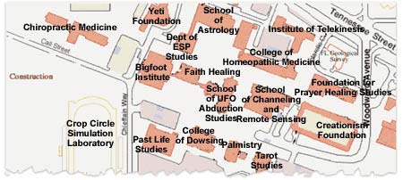

Un relato que se pierde en el misticismo

Los soviéticos usan un término que se traduciría como “reanimador” para definir a un médico que estudia la tarea de rescatar personas que han “muerto” físicamente, ya sea durante procedimientos médicos o como resultado de algún tipo de accidente. Cualquier condición en la que se detiene el corazón puede considerarse “muerte”, pero dado que muchas personas han sido “traídas de vuelta” con recursos tales como un desfibrilador (con el que el corazón se vuelve a hacer latir literalmente electrocutándolo con electrodos aplicados al cuerpo) la definición más correcta de muerte incluye también el achatamiento de los esquemas de ondas cerebrales. Sólo unos pocos minutos en un estado de “muerte” por lo general desemboca en un deterioro sustancial de la función cerebral, de modo que cualquiera que sea reanimado luego de este período con frecuencia resulta seriamente discapacitado.
En un artículo en el sitio holandés www.niburu.nl/index.php?showarticle.php?articleID=5866&lang=ENG encontramos una discusión interesante del asunto:
Un reanimador soviético, el académico Negovsky, explicó la experiencia del más allá en su libro “La muerte clínica según el reanimador”:
Lamentablemente, los investigadores de países extranjeros (especialmente en los EE.UU.) con frecuencia tienden a interpretar tales fenómenos como pruebas del existencia del otro mundo. En ese sentido, a los investigadores los guían las historias que cuentan los pacientes que experimentaron la condición cercana a la muerte. Consideran un argumento las historias contadas por diferentes pacientes (estas historias con frecuencia son idénticas). Sin embargo, este es un argumento realmente malo, dado que el producto patológico del cerebro agonizante o revivido es del mismo tipo para la gente de distintos países. La madurez evolucionaria del cerebro es prácticamente la misma en todas partes. La estructura cerebral es normal, lo que significa que las pautas de muerte cerebral o de la reanimación típicamente también son similares.
Randi: al leer esto, tenga en cuenta que se espera que los autores soviéticos proporcionen puntos de vista que no admitan creencias religiosas como la supervivencia después de la muerte. El informe continúa:
Además, el académico dijo que nunca escuchó a sus pacientes contar historias sobre sus experiencias cercanas a la muerte antes de que se levantaran de entre los muertos. Negovsky dijo que esa alucinación podría ocurrir durante la condición cercana a la muerte, pero en ese momento no hay una muerte clínica real. Agregó que la gente no percibe el mundo externo durante la muerte clínica porque en ese momento la corteza cerebral está inactiva. Dijo:
Podemos suponer que el cerebro revive luego de la muerte clínica y atraviesa las estabas básicas que había experimentado al morir; esa es la razón de que la gente pueda tener alguna experiencia típica de la agonía.
También explicó el fenómeno de “la luz al final del túnel”. Dijo que es una “visión de túnel” que se produce como resultado de la hipoxia de la corteza del lóbulo occipital.
El reanimador ruso Nikolai Gubin cree que el fenómeno de túnel es el resultado de una psicosis tóxica, y el doctor estadounidense E. Rowdin apoya esta opinión. Los pacientes dicen que ven episodios de varios períodos de sus vidas cuando mueren. Los doctores suponen que probablemente el proceso de morir empieza con estructuras nuevas [evolutivamente hablando] del cerebro y termina con las más viejas. Sin embargo, revivir el cerebro es un proceso inverso en el que las partes más viejas de la corteza cerebral reviven antes. Esa es la razón de que los episodios de períodos más tempranos de la vida vuelvan antes que otros durante el proceso de resucitación.
Hace dos años, investigadores suizos afirmaron haber descubierto por qué la gente siente que abandona su cuerpo fisico durante la muerte clínica. Dicen que una circunvolución específica del lado derecho del cerebro es responsable de esta sensación, y que dicha circunvolución recolecta información de distintas partes del cerebro para formarse una idea de dónde está el cuerpo humano en un momento dado. En ese proceso, las señales de algunos nervios pueden seguir una ruta errónea, y como resultado el cerebro se forma una imagen incorrecta en la que la gente se ve a sí misma como si la observaran desde el exterior.
Pero algunos fenómenos de la experiencia del más allá siguen siendo un misterio aun hoy, como por ejemplo cómo gente ciega puede ver lo que ocurre en la sala de operaciones en el momento en que muere. De hecho, una investigación dirigida por el médico estadounidense Kenneth Ring prueba que este fenómeno que registrado con 200 hombres y mujeres ciegos.
Randi: Nótese que dice que personas ciegas pueden “ver” eventos en la sala de operaciones. Creo que es más correcto decir que pueden describir eventos, y que tales descripciones podrían basarse en datos sensoriales distintos de los visuales: movimiento, sonidos, el contenido de las conversaciones y el olfato, sin apelar a nada paranormal. Expresiones como “Enfermera, páseme el escalpelo” o “¡Despejen!” contienen mucha información. Esta capacidad para interpretar eventos sería más pronunciada, por supuesto, en personas ciegas que alguna vez vieron.
Sin embargo, hay algunos científicos que no explican las sensaciones del más allá por medio de procesos fisiológicos que ocurren en el cerebro humano. El psicólogo Watson cree que la gente recuerda su nacimiento mientras muere. Dice que la gente ve la muerte por primera vez durante el parto, cuando venimos a este mundo. También se supone que tales visiones se relacionan con cambios moleculares y atómicos en la cobertura energética del cuerpo. Esta estructura también muere cuando una persona muere; en ese momento produce radiación corpuscular que la gente trata como visiones extrañas.
No tuve problemas con este informe hasta llegar a los dos últimos párrafos que he incluido más arriba. Luego de una discusión racional de las explicaciones más probables, el artículo de pronto degenera en nociones de “visiones”, “cobertura energética” y “radiación corpuscular”: ideas infundadas que han inventado los místicos para llenar libros interminables sobre filosofía metafísica. De nuevo, incluir relatos que parecen apoyar lo místico como auténtico puede eliminar cualquier razón que haya parecido existir hasta ese momento. Una lástima.
La UEF está inquieta
Aquí en Florida, varios profesores del Colegio de Medicina de la Universidad del Estado de Florida dicen que renunciarán si los administradores de la UEF siguen trabajando por la inclusión de una escuela de quiropraxia que se propone, para la cual la legislatura ha reservado US$ 9.000.000. Como muchas universidades han descubierto, además de haber dinero en la práctica de la pseudomedicina, lo hay en su enseñanza.
El doctor Ian Rogers, un profesor asistente en el campus de Pensacola de la UEF, en un e-mail del 15 de diciembre, se refiere al plan como “simplemente absurdo”. Esta opinión, compartida por otros académicos de la UEF, refleja una creencia compartida por muchos en el establishment médico de que la quiroprática es una seudociencia que conduce a tratamientos innecesarios y a veces dañinos. Sin embargo, la Asociación Médica Estadounidense, seriamente dañada por los resultados de varios encuentros en la corte con los quiroprácticos, ahora es muy cuidadosa de hacer afirmaciones sobre la eficacia de este sistema. En efecto, su temor a los juicios la ha silenciado.
Si se establece, esa escuela quiropráctica sería la única de su tipo en los Estados Unidos. Los profesores de la UEF incluso están haciendo circular un mapa paródico de su futuro campus que incluye un inexistente Departamento de Estudios sobre la PES, un Instituto de Pie Grande, una Escuela de Astrología, y una Escuela de Sanación por la Fe junto a una futura Escuela de Quiropraxia.
Este tema se votará este mes ante el consejo de administración de la UEF y la Junta de Gobernadores del estado. El senador republicano Dennis Jones, quien lideró el apoyo legislativo a la escuela de quiropraxia, dijo que los preocupados profesores de la UEF estaban “exagerando”. “Si renuncian, allá ellos”, dijo. El senador Jones es él mismo un quiropráctico…
Con la atmósfera actual en Washington hacia las modalidades “alternativas” y los proyectos “basados en la fe” (y este proyecto sería uno de ellos, ciertamente) la escuela también podría obtener lucrativos subsidios federales.
Más de 500 miembros del profesorado han firmado peticiones contrarias a establecer la escuela de quiropraxia, y algunos de ellos dicen que están dispuestos incluso a hacer más que firmar una petición. Consideran esta decisión algo fatal para la reputación de la UEF. El profesorado como un todo no ha expresado aún oficialmente su preocupación sobre la escuela de quiropraxia.
Otra vez esa botella de sangre
El lector Steven Henry de San Petersburgo, Florida, escribió al Fine Living Channel con una queja, esperando recibir una respuesta. Dice: “Mis ‘vibraciones psíquicas’ me dicen que probablemente no la recibiré”. Esto se refiere a una afirmación milagrosa a la cual ha dedicado mucho tiempo el profesor Luigi Garlaschelli en Italia. He aquí la carta de Steven al canal de TV:
Mi comentario se refiere a su emisión del 4 de diciembre de 2004 de Viajes Inteligentes com Rudy Maxa. Fue un programa interesante hasta el momento en el que el conductor habló sobre la Fiesta de San Genaro. Mencionó cómo la sangre desecada de este santo se licuaba dos veces al año, o de lo contrario ocurriría un desastre. Aparentemente no tiene curiosidad científica, ya que afirmó que “ningún científico puede aventurar una explicación”. Si fuera al menos un poco curioso, podría haber hecho una búsqueda en Internet y hallado una explicación. Tengo una explicación posible a continuación. Me tomó un minuto entero encontrarla. Mi problema con su comentario se refiere al hecho de que hay demasiada desinformación y pensamiento acrítico en la televisión. Lamentablemente, este episodio confirma mis creencias. Si puede, hágale llegar una nota al conductor, hágale saber que un poco de investigación puede ser muy importante. Algunas buenas fuentes son el Comité para la Investigación Científica de las Afirmaciones Paranormales www.csicop.org y la Fundación Educativa James Randi www.randi.org . Estas organizaciones se ocupan de examinar afirmaciones como éstas.
El artículo que sigue es de http://www.rathinker.co.kr/skeptic/refuge/bunk13.html
8 de mayo de 2000. “La sustancia que algunos napolitanos creen que es la sangre desecada de su patrono, San Genaro, se licuó a voluntad para un evento bianual que los fieles creen que es un milagro”. Así empieza una historia de Reuters publicada en Yahoo! News.
El polvo se vuelve misteriosamente líquido dos veces al año, en la fiesta del santo el 19 de septiembre y el primer sábado de mayo. El evento ha sido registrado los dos días casi sin interrupción en los últimos 600 años…

Randi: No, no es un “polvo” en absoluto. Es una masa gelatinosa que permanece firme en la botella hasta que se agita vigorosamente. Y durante las ceremonias bianuales, se procesiona con ella durante más o menos una hora, y se la agita periódicamente. Esto es congruente con la teoría de Garlaschelli (vean más adelante) de que es una mezcla tixotrópica. Sigan leyendo:
Los científicos italianos han confirmado que la sustancia dentro del frasco es sangre pero no pueden expilcar por qué se licua con periodicidad.
Randi: No, en lo absoluto. Todo lo que se ha establecido (hace más de un siglo en 1902, cuando no existían técnicas adecuadas de absorción de la luz) que que el gel parecía sangre, y desde entonces se ha descubierto que la sustancia de imitación preparada por Garlaschelli tiene una apariencia y características muy similares.
En su favor, el artículo hace notar que los historiadores no tienen registro de esta supuesta reliquia de sangre antes de 1389, más de mil años después de la supuesta muerte de Genaro. Digo “supuesta muerte” porque no hay registro de que siquiera haya existido (Nickell, “Looking for a Miracle” [“Buscando un milagro”], 1993, p79). Además, a los científicos italianos que examinaron el frasco de sangre en 1902 y en años recientes no se les permitió llevar una muestra de la sustancia al laboratorio, sólo se les permitió apuntar una luz a través del recipiente y sobre la base de un análisis espectroscópico concluyeron que la sustancia es sangre (Nickell, p78). No es exacto, sin embargo, decir que los científicos no puede explicar por qué la sustancia del frasco se licua con regularidad. Un profesor de química orgánica de la Universidad de Pavia, Luigi Garlaschelli, y dos colegas de Milán sugirieron como explicación el tixotropismo. Fabricaron s propia “sangre” que se licuaba y se congelaba, usando tiza, cloruro de hierro hidratado y agua salada. Joe Nickell hizo lo mismo con aceite. cera y “sangre de dragón” (un producto vegetal resinoso de color rojo oscuro).
El artículo menciona que los napolitanos son gente supersticiosa, pero no menciona que hay cerca de 20 supuestos frascos con la sangre de varios santos y casi todos están en la región de Nápoles, “lo que indica algún secreto regional” (Nickell, p79). El artículo también sugiere que sus supersticiones pueden estar justificados. El número que los napolitanos asocian con los milagros, 66, apareció en la lotería nacional el 6 de mayo. El artículo también señala que los napolitanos creen en que si la sangre no se licua, hay un desastre en puerta.
Se han producido desastres al menos en cinco ocasiones luego de que la sangre no se licuó, incluyendo en 1527 la muerte de decenas de miles de personas por la plaga y en 1980 cuando 3000 personas murieron luego de un terremoto que devastó el sur de Italia.
Lo que no se menciona es cuántas veces no se produjo el desastre luego de que la sangre no se licuó y cuántas veces sí se produjeron desastres luego de que la sangre se licuó. Parece haber algo de pensamiento selectivo.
El artículo también sugiere que el “milagro” es un engaño. Se señala que el Cardenal Michele Giordano, quien llevó el frasco en la procesión de mayo de este año, se halla “bajo investigación por sospecha de complicidad en usura, extorsión y asociación criminal luego del arresto de su hermano en 1998”. Pero el artículo no menciona que el ritual también solía realizarse el 16 de diciembre, pero la licuefacción ocurría raras veces en esas ocaciones (aparentemente debido a la temperatura más fría) y esas ceremonias han sido interrumpidas” (Nickell, p81). La mayoría de los escépticos están convencidos que lo que sea que se halle en el frasco reacciona ante algún fenómeno naturla, como cambios de temperatura o movimiento. Incluso algunos pensadores religiosos consideran tales “milagros” como frívolos e indignos de Dios.
Remito a los lectores al excelente libro de Joe Nickell (uno de muchos) del cual se extrajo algo del material precedente. Es “Looking for a Miracle”, publicado por Prometheus Books. Pueden hacerle preguntas a Joe en TAM3… ¡falta menos de una semana! Y también venderemos algunos de los libros de Joe.
Chica inteligente
El lector Jeff Wagg nos ha informado (como si hiciera falta que nos lo dijeran) que la ciencia y la racionalidad una vez más nos han sido mucho más útiles que cualquier superstición o mitología. Dice Jeff:
Hay un artículo bastante inspirador sobre cómo un poco de ciencia enseñada a una niña de 10 años salvó cientos de vidas en Phuket, Tailandia, cuando el tsunami impactó allí. Es más de lo que cualquier psíquico o religioso puede afirmar.
Resumiendo, una niña de edad escolar llamada Tilly Smith salvó las vidas de cientos de personas advirtiéndoles que una pared de agua (un tsunami) estaba a punto de impactar. Aprendió sobre el fenómeno en clase de geografía, y obviamente extrajo beneficios de esa lección. Tilli estaba de vacaciones con su familia en la isla Thai cuando se dio cuenta de pronto de lo que estaba pasando y alertó a su madre. Su intuición fue suficiente para causar alarma y provocar la evacuación de la playa Maikhao y un hotel vecino antes de que el agua impactara.
La señorita Smith aprendió sobre este tipo de sucesos durante su último año escolar, cuando su maestro de geografía, el Sr. Andrew Kearney, dictó su clase sobre terremotos y cómo pueden causar tsunamis. Tilli observó que “la marea se retiró de pronto”, y supo lo que significaba. El señor Kearney le había explicado a su clase que había unos diez minutos desde el momento en que el océano se retiraba hasta que impactara el tsunami. El área fue alertada, y la gente huyó rápidamente al interior de la isla.
Como señala Jeff, ningún psíquico ni astrólogo predijo nada de este tenor; pero la ciencia elemental, por medio de una estudiante inteligente y preocupada, entró en acción y salvó vidas.
Es peor de lo que pensaban
Varios lectores, que notaron cuán indignado estaba yo con las perillas de sintonizar de US$ 485 que cité la semana pasada, me dijeron que me sorprendería más cuando examinara lo que los farsantes de Reference Audio tenían que decir sobre la misteriosa laca “C37” que venden. Tenían razón. Asegúrense de estar sentados, y luego vayan a http://www.referenceaudiomods.com/Merchant2/merchant.mvc?Screen=CTGY&Store_Code=RAM&Category_Code=C37 y le garantizo que quedarán boquiabiertos. ¿No hay límite para lo que compra la gente estúpida, o para lo que le ofrecen los artistas de la estafa? ¡Pagan US$ 60 por media onza [aproximadamente 15 mililitros] de esta laca! ¡Vayan a http://www.tnt-audio.com/accessories/c37_e.html y vean que, como era de esperarse, un destacado reseñador de productos ha decidido que funciona! El “descubridor/fabricante”, un tal Dieter Ennemoser, hace la increíble afirmación de que “luego de alguna investigación descubrió que el carbono es el elemento decisivo para la calidad sonora”. ¡Ah! ¡Me preguntaba qué elemento era el que determinaba eso! Dieter explica que “con el tiempo descubrió esto en los huesos humanos”.
¡Obvio!
Tenga en cuenta que los artistas de la estafa se ríen junto con usted cuando leen esto, pero por una razón muy diferente. Comprenden plenamente el hecho de que algunas personas comprarán cualquier cosa (a cualquier precio) si se la acompaña de suficientes sandeces y las respaldan revistas lo bastante caras. ¡Seres humanos serios, adultos (no chimpancés acabados de bajar de un árbol) realmente ponen dinero para tales disparates! Es triste por sí mismo, pero recuerden: esa gente también vota…
Laca C37 = farsa.
Médium muy bien cocido
Interrogada sobre Allison Dubois, de Arizona (la “psíquica” en la cual NBC-TV ha basado su nueva serie “Medium”, la Oficina del Fiscal del Condado de Phoenix Norte dice que la toman lo bastante en serio como para haber “empleado sus servicios en ocasiones”. Bill Fitzgerald, vocero de la oficina, dice: “Trabajó para nosotros sin remuneración”. No da detalles pero dice que se la ha usado para cosas tales como selección de jurados. ¿Qué?
¡Ey, eso no es nada! He encontrado casos en los cuales los jueces han recurrido a la astrología cuando sentencian a personas convictas, y otros le han dicho al jurado que deben creer en poderes psíquicos similares a los que supuestamente tiene Allison. Pero creo que debería dejar de hacer comentarios sobre esta mujer. En una entrevista reciente, afirmó: “Porto un arma, y creo en la pena de muerte”. Ups.
Nos divirtió la semana pasada recibir una diatriba de nueve páginas de un bufete de abugados que representa a Dubois, quejándose por nuestro uso de la foto de Dubois con el profesor Gary Schwartz, el orgullo de la Universidad Estatal de California. Nos dijeron que deberíamos
cesar y desistir inmediatamente del uso, exhibición o cualquier otro uso de la Fotografía.
Bien, para evitarle a Joseph Dubois, el alarmado fotógrafo, cualquier inquietud, angustia, turbación o daño emocional, hemos eliminado la foto y los resultados pueden verse en http://www.sindioses.org/randi/randi20041217.html#otro-m-dium-bien-cocido. Simplemente baje para ver dónde solía estar la foto…
En respuesta a esos muchos lectores que han sugerido que le presente formalmente el desafío de la JREF a Allison Dubois, por favor convénzanse de que ella lo conoce en su totalidad, y que depende de ella presentarse como aspirante; nosotros no los perseguimos. Por supuesto ella nunca se presentará, ya que sabe que no puede pasar ningún examen adecuado; su encuentro con Gary Schwartz debe haber sido un paseo por el parque para ella, conociendo sus normas de seguridad y evaluación. Pero no vamos a dedicar tiempo alguno intentando convencer a Allison para que se ponga a prueba; examine simplemente el éxito que tuvimos cuando le ofrecimos el premio específicamente a Sylvia Browne; ya han pasado 1402 días (es decir 3 años, 10 meses y 2 días) desde que ella estuvo de acuerdo en hacer la prueba, ¡y parece que todavía no puede encontrarme!
Quizá debería dejar que la serie de TV siga su curso natural hacia el olvido.
Pero me preocupa esa arma que Allison dice que porta. Psíquica linda. Toma un caramelo. Toma dos…
Al César lo que es suyo
Me informó el lector Dann Simonsen que fue nuestro amigo danés Claus Larsen, en TAM1, quien me dio el superhuevo “extraterrestre” que también le dieron a Geller los extraterrestres… ¡Lo siento, Claus, lo había olvidado! ¡Pueden hablar con el Sr. Larsen la semana que viene en Las Vegas en TAM3! Para ver referencias previas, vean http://www.randi.org/jr/051002.html y http://www.randi.org/jr/121704no.html#6 [y su traducción en Sin Dioses].
En conclusión
Al momento de escribir esto, hay 520 registrados para TAM3…

Comentarios
Comments powered by Disqus